A solo social media operator who runs the whole engine — strategy, scripts, shoots, scheduling, analytics. I've scaled a YouTube channel from 0 to 10.8M views in 18 months and LinkedIn posts that hit engagement rates 10–15× the B2B benchmark.
I'm a journalism grad turned solo social media operator. At Scripbox, I run social end-to-end across five platforms — research, scripts, recording, captions, scheduling, community, analytics — and I've built it into a system using a custom AI workflow on top.
I'm at my best when I get to own a brand's voice and watch it move the numbers. Most of what I know about the internet I learned by being chronically online and then making spreadsheets about it.
Channel-level analytics from Scripbox YouTube (Sep 2024 – May 2026). Long-form podcasts + Shorts strategy, built and owned end-to-end.
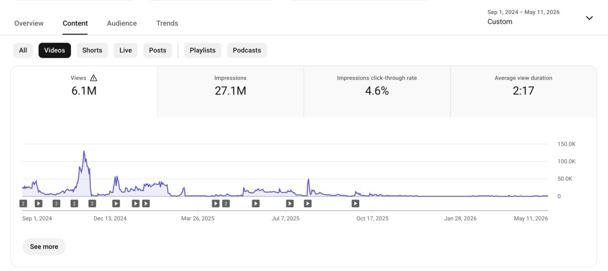
long-form · 6.1M views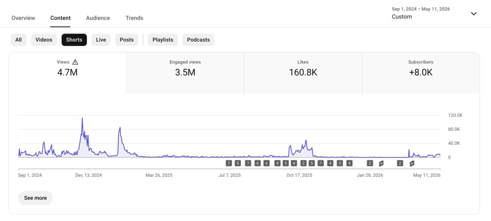
shorts · 4.7M viewsSix things I built, shipped, or grew at Scripbox. Each one with the receipts.
When I joined Scripbox in Sep 2024, the channel needed a content engine — fresh strategy, weekly publishing, and a story arc the algorithm would reward. Small team. Even smaller editing budget.
Built a content engine across long-form (podcasts) and Shorts; designed each long-form episode to clip into 4–6 Shorts; A/B-tested thumbnails on tentpole episodes; ran a weekly performance review and re-cut underperformers.
A long-form-first, Shorts-fed strategy compounds. Every podcast became its own distribution machine — one recording session, then 4–6 vertical clips, then a LinkedIn cut, then a WhatsApp carousel.
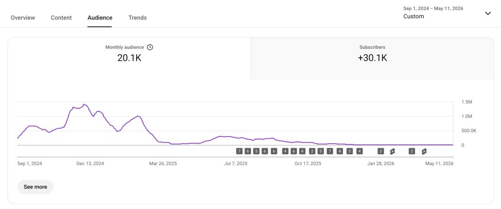
+30.1K subs · 18 monthsWanted to break out of niche-finance reach and prove the podcast could pull a general-audience number. Picked an internal guest with broad name-recognition, trust, & experience, with a clear hook — "Top Financial Advisor Reveals Best Mutual Fund Strategies."
Tight 6:17 average-view-duration cut. A/B-tested 3 thumbnail variants in YouTube Studio for 10 days. Rotated the winner permanently.
The winning thumbnail accounted for a 4-point lift in watch-time share. Two-line, contrast-heavy thumbnails consistently outperform single-line or pure-graphic variants for this audience.
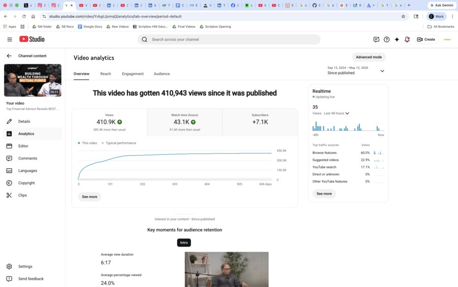
overview · 410.9K views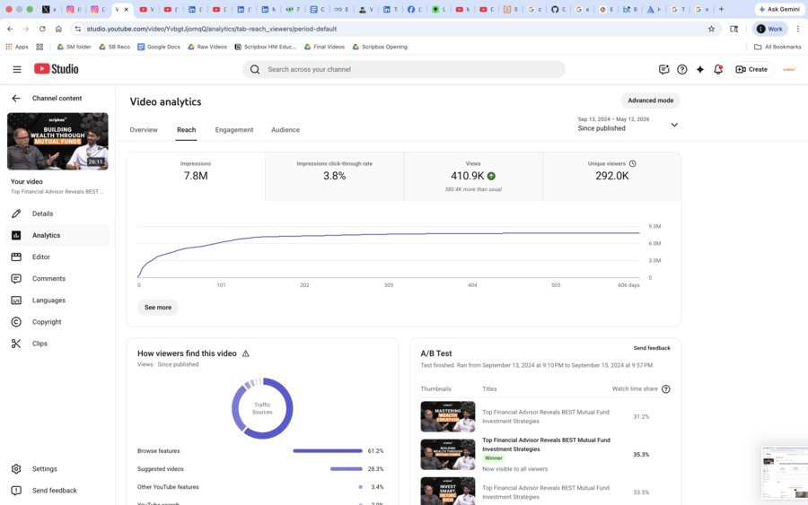
reach · 7.8M impressions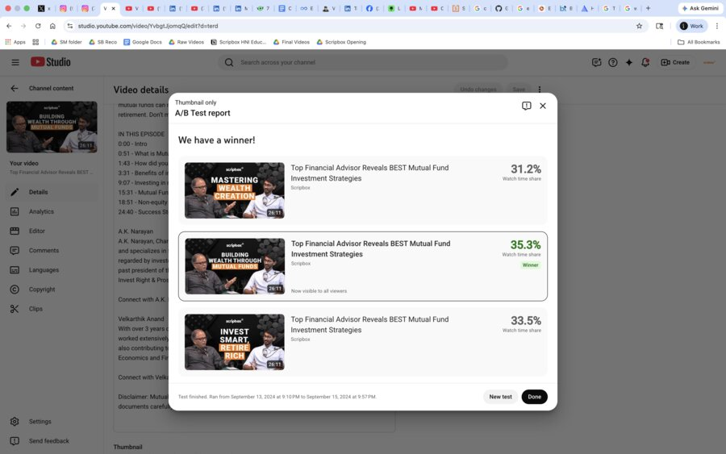
a/b test winner · 35.3%Click-through is the leverage point for YouTube — small thumbnail wins compound across hundreds of thousands of views. This is the process case study: what makes me different from a candidate who just records and posts.
For every tentpole episode, I shoot three thumbnail variants with different framing and copy. I use YouTube Studio's built-in A/B test for 7–10 days, rotate the winner permanently, and track the watch-time share lift per test in a Sheet.
Thumbnails are a system, not a guess. Once you've run 10+ tests, you have a reusable playbook — and the next episode launches with the winning pattern already baked in.
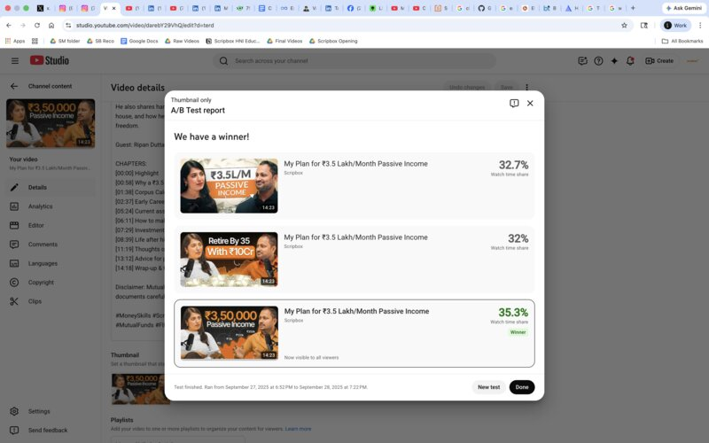
test 2 · 35.3% winsB2B finance LinkedIn typically engages at 2–5%. We wanted thought-leadership reach without paid push. I architected hooks using a custom Claude skills setup, carousel-first format, and a founder-aligned point of view.
Hook → controversial-but-defensible POV → carousel proof → soft CTA. Published at the hour the founder's audience was most active. Then iterated weekly based on what reactions vs. clicks vs. reposts each post got.
The pattern transfers across topics. Once you know what your audience over-rewards (POV + proof + the right line break), every post starts at 2× baseline before you've even hit publish.
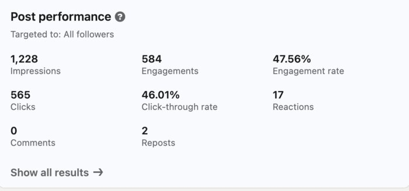
47.56% ER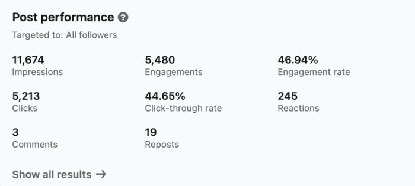
46.94% ER · scaled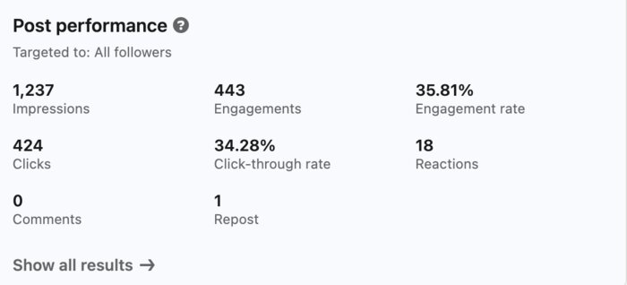
35.81% ER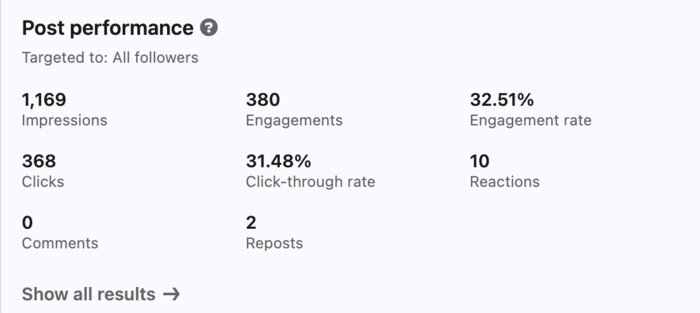
32.51% ERLooking for what made the Instagram algorithm push us to non-followers. The answer was emotional hooks for finance content — even more than informational ones.
Emotional-arc opener ("My husband Sanjay passed away…") for a Reel about life insurance and inheritance gaps — wrote, recorded, edited, and cross-posted to Facebook for incremental distribution.
Emotional hooks for finance content drive saves better than informational hooks — and saves correlate with follow-through far better than likes. Cross-posting to Facebook sometimes outperforms IG on the same Reel.
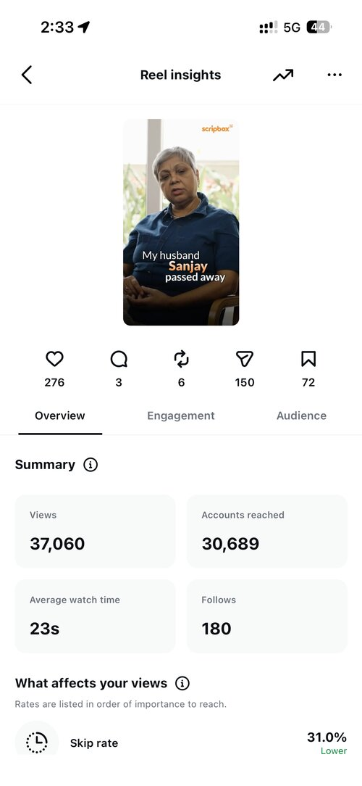
37K views · 180 follows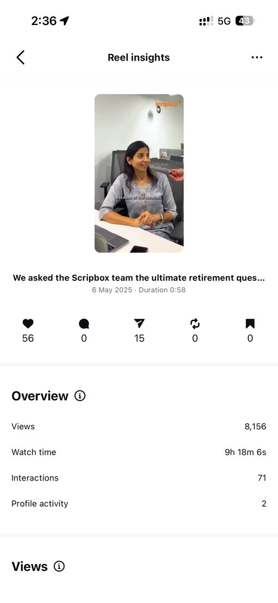
retirement Q · 8K views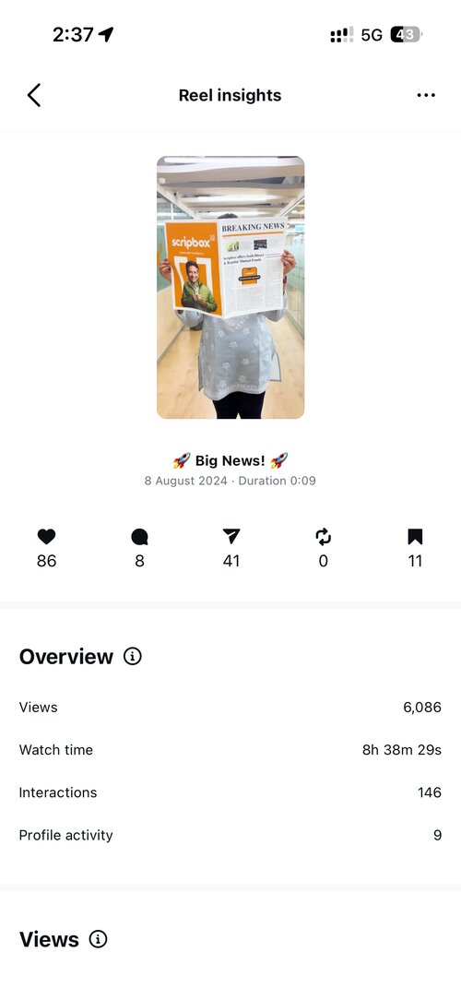
big news · 6K viewsScripbox needed a faster distribution surface than newsletters for market-news POV. Founded the channel on Feb 24, 2026 and built a Mon/Thu cadence from scratch.
Co-developed POV with the founder; designed easy-digest carousel infographics with minimal text and one stat per slide; kept the cadence ruthlessly consistent.
WhatsApp rewards visual hierarchy. One number, one line, big contrast — that's the unit of attention people will swipe through. Anything more and they drop off.
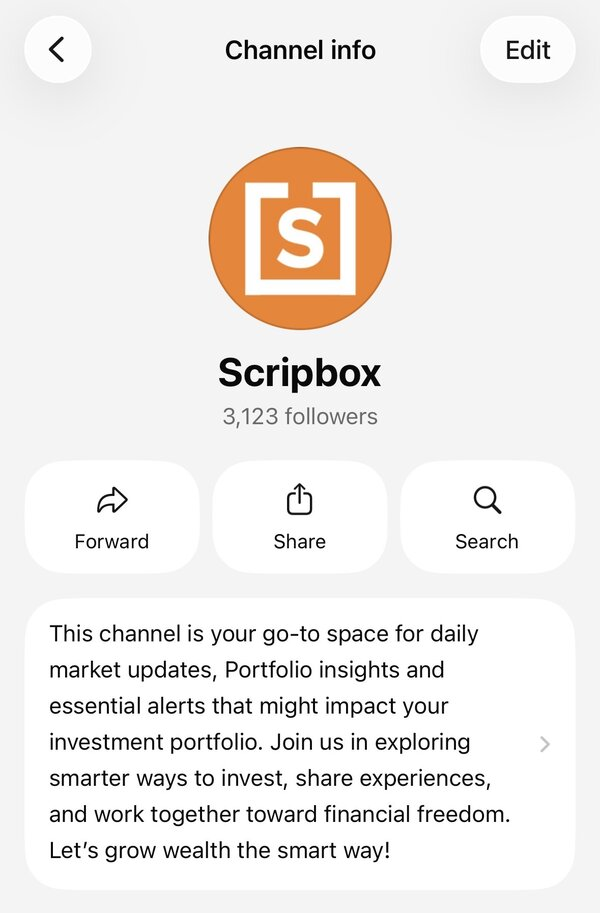
3,123 followers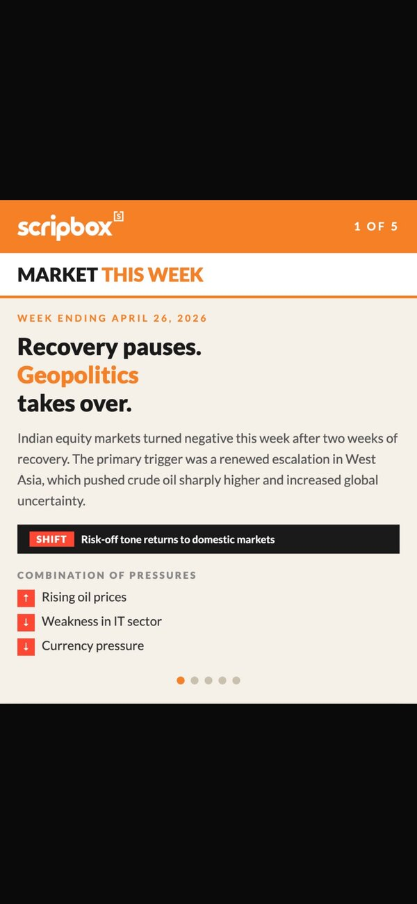
market this week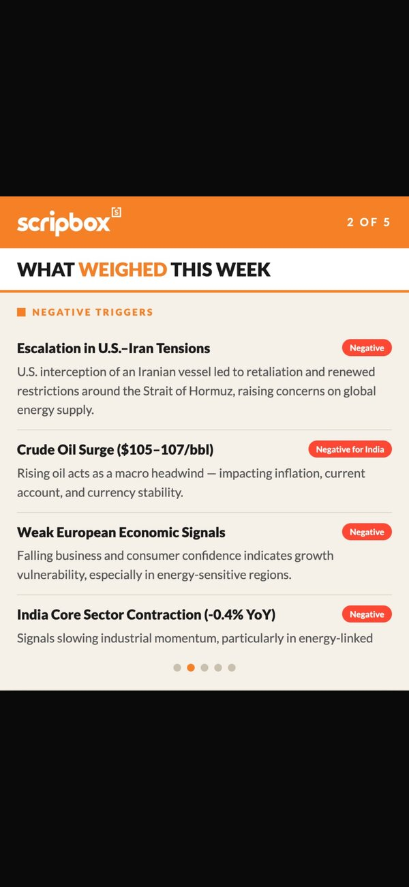
what weighed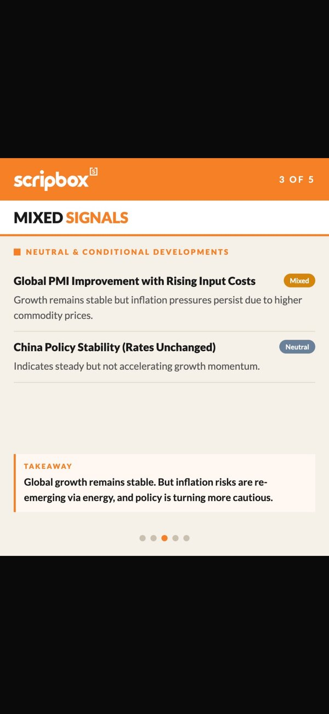
mixed signals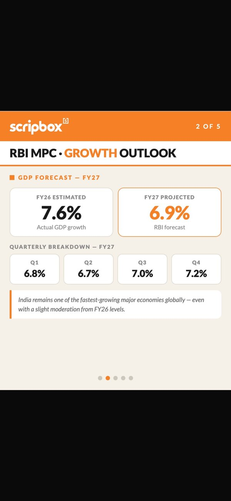
RBI MPC growthI run all of this as a one-person team using a custom Claude skills setup with hook + CTA frameworks, layered with ChatGPT and Gemini for cross-checks, and a strict human-in-the-loop step for brand voice. AI scales ideation — taste stays human.
A quick browse through the actual work — podcasts, Shorts, LinkedIn posts, and Reels — with the numbers right there.
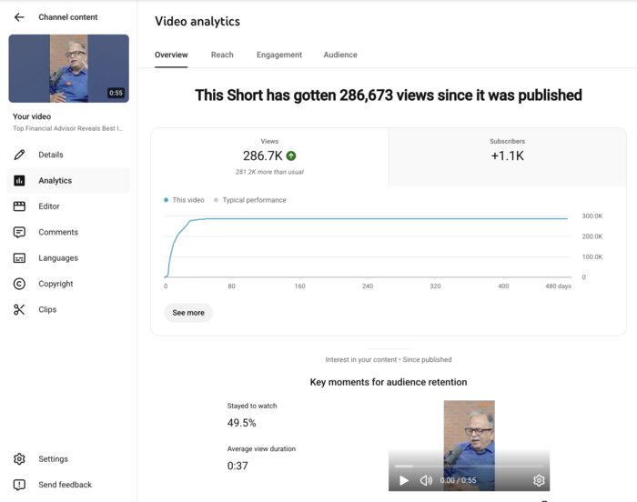
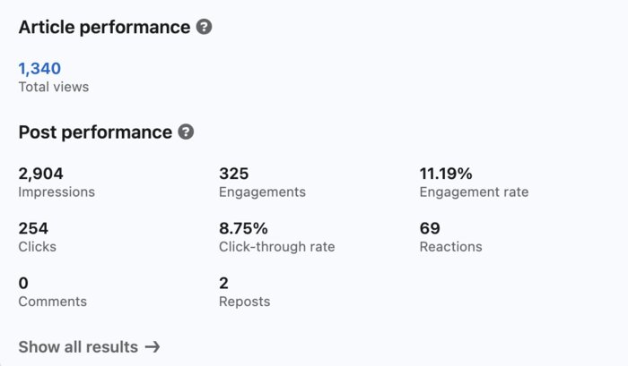
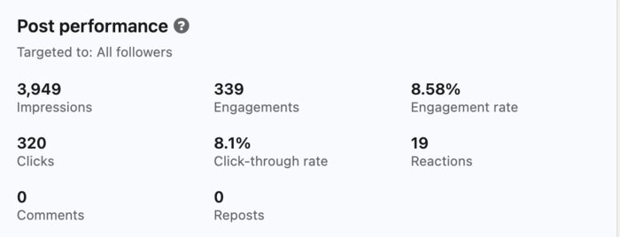
Monthly calendars planned in advance. Weekly insights review. A/B testing on tentpole episodes. Same process whether it's a podcast, a Reel, a LinkedIn carousel, or a WhatsApp drop.
News outlets, internal research, and competitor scans feed the research step. AI refinement runs through my custom Claude skills setup plus ChatGPT and Gemini cross-checks. Editing is split between agency partners (for tentpoles) and self-edit (for hot topics that need to ship same-day).
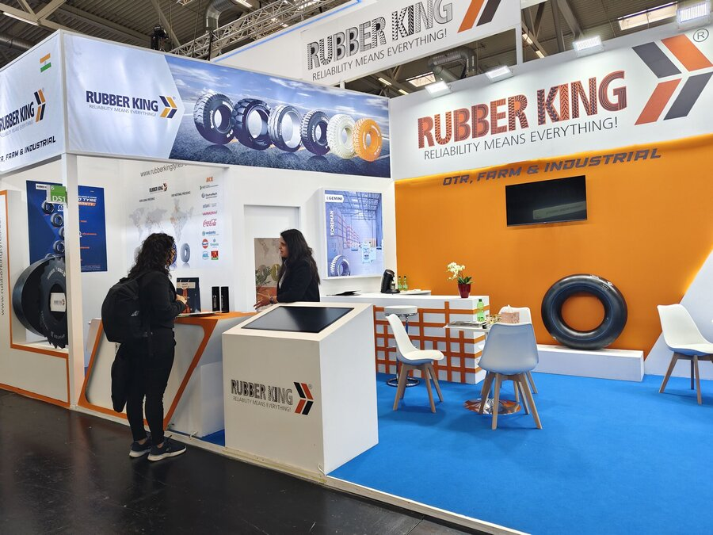
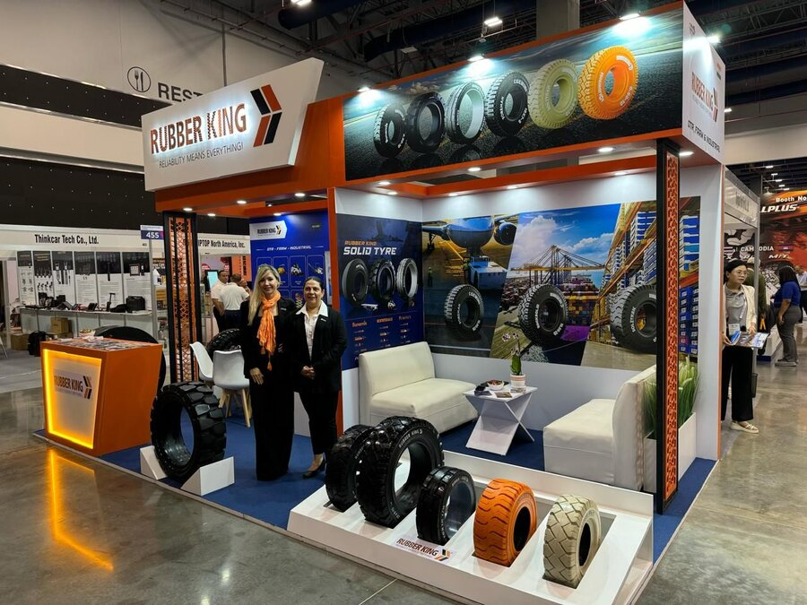
Two months interning with Rubber King's branding team — managing the brand asset library, drafting CEO interviews for magazines with 1.3M monthly readers, and coordinating booth comms at international trade shows in Chennai, Germany, and the US.